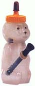
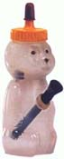

...NetworkSecurity.org...
n0t v3ry s3cur3 i5 i7??
bw4w4w4w4w4w4w4
Back To Bussiness
b7w 7hi5 w4s h4ck3d c0ur7es3y: ¯)a99e(¯ & `//d4o , <=o
Br1n9ing i7 R4w...f0r 3v4?
...03/2/99...
s0m3 w4ck 1nt3rn3t t1m3??
pe4ce to th3 g0dz , t4gg3r 0ne luv , to all....y0u kn0w how w3 roll....you c4nt fr0nt 0n th1s... y0u kn0w wh0 ej3 4m , g3t 4t m3 n1gga2 ,OUT 1m 9h0st
wh0rd up my niggaz. wd40 h3re h0ldin dis b1tch d0wn.
g0tta lub dis netw0rk security eh comradS? EH?
btw we are reppin EFn3t , not some wack net that no one knows about , we roll original ;)
...Greets: site(my w0rm bitch),ryan my ch3w t0y,,xcellsior,cezone, MiKeD!!,nick the hick (gettin wd in troubles with fbey3), warezden cr3w, my #sony brothaz, and last all you other niggas/gimps holding it down. you cats better keep it real. I go
t nothing else to say so pEace out.
 ^-bahahaha look at this gimP! N1ck d4 hickz!@!4!20

Winnie the bong sez no files were harmed during the hacking of the site. All index.htmls were renamed to protect the rights of the inn0c3nt.
^-bahahaha look at this gimP! N1ck d4 hickz!@!4!20

Winnie the bong sez no files were harmed during the hacking of the site. All index.htmls were renamed to protect the rights of the inn0c3nt.